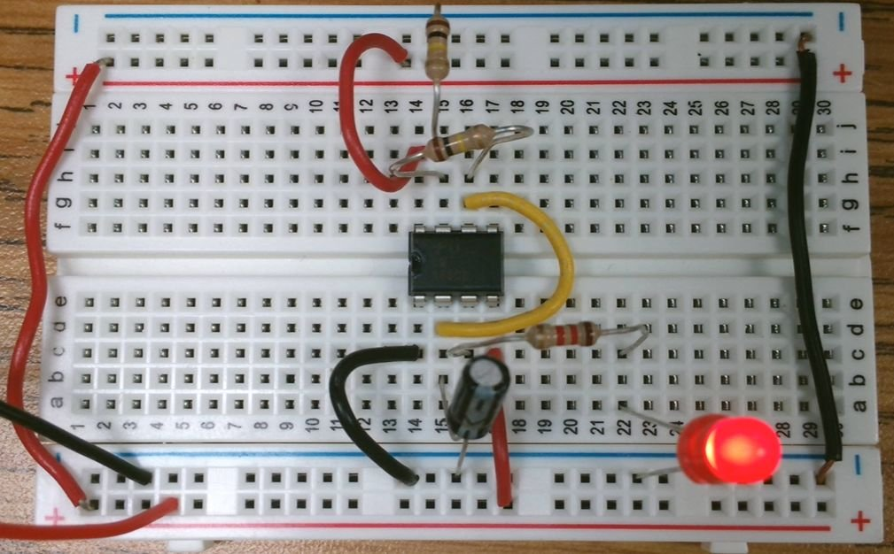

// Inside the 555 · Gates and ladder logic · Sourcing and sinking sensors
In AR1 you built this 555 flasher. Two resistors and a capacitor set the timing, and the LED blinks on and off by itself.
Back then the chip was a black box. Today you open it. Every block inside is built from parts you have studied in this unit: resistors, transistor switches, and logic gates.

A home alarm has three inputs. Armed is 1 when the owner turns the alarm on. Door closed and Window closed are 1 while each one is shut. The alarm should sound when it is armed and the door or the window is open.
Turns "door closed" into "door open", one NOT for each sensor.
Either opening is enough: the door or the window.
Only when the alarm is armed. On the LogiKIT, that is four gate modules.
A PLC is programmed in ladder logic, drawn like the relay circuits from the AC Circuits unit. Each gate has a contact pattern, the same series and parallel idea as the transistor gates on Day 7.
Current must pass both contacts.
Either path will do.
Passes current when its input is off.
The alarm rung: an Armed contact in series with a parallel pair of normally closed Door closed and Window closed contacts, driving the Alarm output.
The door sensor could have reported "open" instead. It reports "closed" on purpose: it holds its signal on while everything is safe.
The signal drops to 0, which reads exactly like an open door. The alarm sounds, so a fault can never hide a break-in.
Stop buttons and safety switches are wired normally closed for the same reason: a broken wire stops the machine instead of disabling the stop.
This is called fail-safe design: when something breaks, the system falls into its safe state.
Use three switches for Armed, Door closed, and Window closed, and an LED for the alarm.
Wire two NOT modules into an OR, then the OR and Armed into an AND.
Test all eight input combinations and record when the LED lights.
In your notebook, draw the gate schematic and the matching ladder rung side by side.
With the alarm armed, the LED should be off only when the door and the window are both closed.
Add a motion sensor input. How many modules and wires did it take?
A 24 V proximity sensor has three wires: brown to +24 V, blue to 0 V, and black for the signal. Inside is a transistor switch like the ones you built on Day 5.
On detection, its transistor connects the signal to +24 V, like the 2N3906 high-side switch. Current flows out of the sensor into the PLC input.
On detection, its transistor connects the signal to 0 V, like the 2N3904 low-side switch. Current flows from the PLC input into the sensor.
Your teacher powers a PNP sensor and an NPN sensor from 24 V and brings a steel target up to each one. Watch the sensor's indicator light and the voltage on its black wire.
An LED and 4.7 kΩ from the black wire to 0 V stand in for the PLC input. Predict: does the signal rise or fall on detection?
An LED and 4.7 kΩ from +24 V to the black wire stand in for the PLC input. Predict: does the signal rise or fall on detection?
The PNP signal rises to +24 V; the NPN signal falls to 0 V. Both datasheets show this in their wiring diagrams.
Sourcing: a 2N3906 with its emitter on +5 V. A push button pulls its base to ground through 4.7 kΩ. Its collector is the signal.
The "PLC input" is an LED and 1 kΩ from the signal to ground. Press the button: the LED lights.
Sinking: a 2N3904 with its emitter on ground. The button feeds its base from +5 V through 4.7 kΩ. The input is an LED and 1 kΩ from +5 V to the signal.
Swap each "PLC input" to the wrong type. Explain why the LED never lights.
Compare your LogiKIT build with the ladder rung in the Gates and Ladder simulator on slide 8. Which is easier to change, and which is easier to troubleshoot?
Adding a motion sensor took a new gate and new wires. In a PLC it is one contact in the program.
A PLC shows every input and output on lights and on screen, and highlights the live path through each rung.
Emergency stops stay hardwired through safety relays, so a software mistake can never disable them.
A PLC is still made of what you studied: optocoupled inputs, a processor of billions of transistor switches, and transistor or relay outputs.
You followed one idea, the switch, from a relay coil to a programmable controller.
Relay: a coil moves contacts
Diode: one-way current
Transistor: a small current controls a large one
Gates: switches in series and parallel
Interface: 5 V commands 24 V safely
PLC: logic you can reprogram